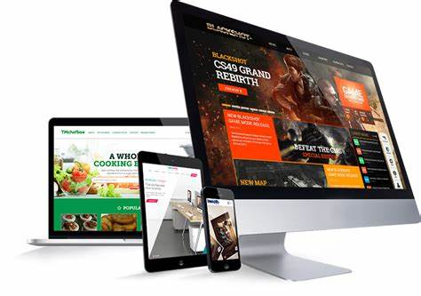

WORK

Website
DesignDesign
Web design is the process of creating websites. It encompasses several different aspects, including webpage layout, content production, and graphic design. While the terms web design and web development are often used interchangeably, web design is technically a subset of the broader category of web development.

Font end
Design
Design
Front end is an engineering design approach used to control project expenses and thoroughly plan a project before a fix bid quote is submitted.[1] It may also be referred to as Pre-project planning (PPP), front-end loading (FEL), feasibility analysis, or early project planning
.png)
Digital
Marketing
Marketing
Any marketing that uses electronic devices and can be used by marketing specialists to convey promotional messaging and measure its impact through your customer journey. In practice, digital marketing typically refers to marketing campaigns that appear on a computer, phone, tablet, or other device. It can take many forms, including online video, display ads, search engine marketing, paid social ads and social media posts. Digital marketing is often compared to “traditional marketing” such as magazine ads e.t.c